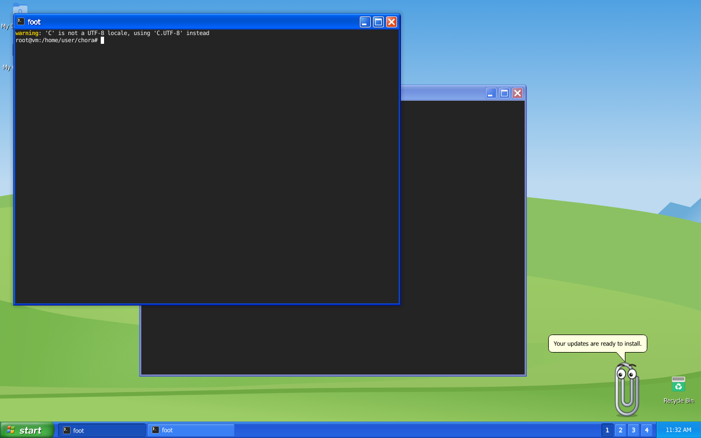
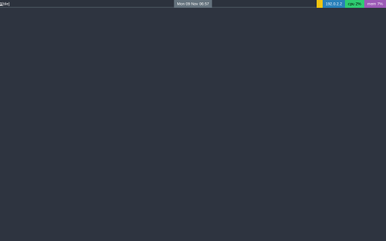
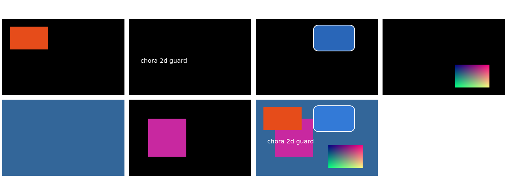

Where the session stands
Right now
Running
- Nothing. The day is closed.
Next
- One fixed merge-check script, so a failing test can never be pushed again
- Decide how the chat field may take the keyboard safely
- 3D step 2 and a "give window" key, beside the chat work
- Start on stability bugs
Needs you
- Delete 15 old branches on GitHub (list in today's report)
- Open questions have defaults; nothing is blocked
Progress
Status log
decisionOne cube instead of two: xp's old cube effect will be replaced by the 3D construct cube, where each face is a full xp desktop with its own taskbar.
issueThe merge check pushed despite one failing test. A rerun showed the code is fine. Fix: one fixed script tomorrow.
mergedHUD model: the folder format, the English and German word table, the question card. Hardened after a security review.
mergedVoice chat methods. The review caught a freeze when stopping a helper; fixed before merge.
reviewTwo reviewers (bugs and security) checked all code merged without review. 1 high, 7 medium findings; all fixed or scheduled.
critiqueDaily self-critique: 20 points. Biggest: the sprint crowded out foundation work. From tomorrow one foundation track always runs.
stoppedThe planned keyboard rule for the chat field trusted tokens that need no real click. Stopped and sent to a design check.
sprintFirst feature sprint started: HUDs and a helper chat, themed in each look.
docsDesign principles written: minimal, flawless, flexible.
fixedAll of today's commits now carry your name and GitHub email.
mergedHelper permissions: risky actions need a key or a click, never a spoken yes.
mergedThe 3D construct takes over windows from other window managers without losing focus.
What worked, what did not
Worked
- Reviews caught real bugs before you would see them: a spoken yes approving risky actions, a voice freeze, HUD folders that could fake a question.
- 2D stays pixel-identical while 3D is built.
- Simulated users found real everyday gaps.
- A UX designer now checks every visible change before coding.
Did not work
- The sprint crowded out stability work and the Dependabot updates.
- The merge check failed four times.
- Commit authorship had to be rewritten twice.
- A keyboard rule was designed on a wrong assumption.
- Reports lagged behind for half a day.
Ideas
- One chat that lives in every look: side panel in tiling, the paperclip's bubble in xp, a drawer in mc, a glass panel in 3D.
- Your own HUDs as a dropped folder: it changes the look, never what runs.
- The chat follows you when you switch looks.
Screenshots





The plan
Rule throughout: quality and stability before features. Feature work never stops the foundation work.